- 01 我应该站在谁的肩膀上 - OSI vs TCPIP模型.md.html
- 02 万丈高楼平地起- 物理层 + 数据链路层.md.html
- 03 OSI的灵魂就是我 - 网络层.md.html
- 04 要快还是要稳你说好了 - 传输层.md.html
- 05 是时候展现真正的技术了 - 应用层.md.html
- 06 重回小学课堂 - 二进制101.md.html
- 07 1+1 = 2吗？ - 二进制的计算.md.html
- 08 16进制又是个什么鬼？ - 16进制的讲解.md.html
- 09 我想有个家 - 什么是IP地址.md.html
- 10 我可是住二环的人 - IP地址的组成和分类.md.html
- 11 我已经没地方住了吗 - IPv6.md.html
- 12 向左还是向右 - IP路由.md.html
- 13 我能给你安全感 - TCP（一）.md.html
- 14 我那不为人知的秘密是什么 - TCP（二）.md.html
- 15 不问收没收到，就问快不快 - UDP.md.html
- 16 我为什么与众不同 - TCP高级篇（拥塞模型）.md.html
- 17 来，先看看我的家谱 - HTTP的身世.md.html
- 18 我都这么成功了，你却说我不行 - HTTP 的特点和缺点.md.html
- 19 我老了，让我儿子来吧 - HTTP2.md.html
- 20 稳重的大外甥 - HTTPS.md.html
- 21 HTTP的高级篇 - HTTPClient（Java）.md.html
- 22 想来我家，你自己查呀 - DNS.md.html
- 23 来的早，不如来得巧 - NAT.md.html
- 24 辛苦的邮政 - SMTP.md.html
- 25 你就是看不见我 - VPN.md.html
- 26 黑客的好帮手 - SSH.md.html
- 27 你可以得到我的心，却得不到我的人 - 物理安全设备.md.html
- 28 你怎么证明你就是你 - 身份验证和访问控制.md.html
- 29 我要怎么藏好我的考研资料 - 网络攻击（一）.md.html
- 30 我要怎么藏好我的考研资料 - 网络攻击（二）.md.html
- 31 如何保护我的考研资料 - 网络攻击防范.md.html
- 32 Linux网络安全 - 安全实战.md.html
- 33 结语.md.html
32 Linux网络安全 - 安全实战
我们来学习如何利用一些特别智能的工具，这些工具可以为你提供有关网络运行状况的稳定，快速，直观的更新，提供深入的历史数据表示，当发现可疑的行为时会及时警告，并持续进行涉及你所关心的网络节点的漏洞评估。如果你要启动一些面向互联网的应用程序，那么你确实应该考虑将某些甚至全部这些功能集成到你的基础架构中。
ntop
像Unix中的top指令一样，能够实时显示系统中各个进程的资源占用状况，ntop使你可以密切注意网络上的情况。当以混杂模式（默认设置）运行时，ntop将监视和报告所有流量，无论它是否针对你的特定主机。在此Ubuntu上安装ntop很容易。但是，由于系统将提示你输入要监视的网络接口，因此应首先要确认指定的名称（使用ifconfig）。使用以下指令安装
sudo apt install ntop
复制
就像我们提到的那样，安装过程需要输入你要监视的网络接口。
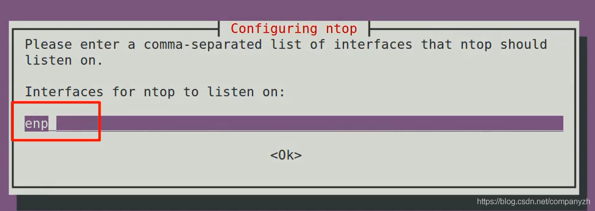
安装完成后，ntop应该已启动并正在运行。你可以通过systemctl和ps来确认这一点。
sudo systemctl status ntop
ps aux | grep ntop
复制
如果你不希望ntop在系统启动时自动启动，则可以在etc/default/ntop中将ENABLED的行的值编辑为0而不是1。
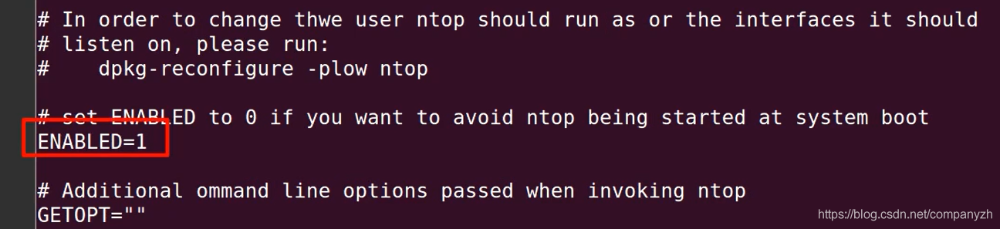
默认情况下，ntop包含一个内置的Web服务器，可通过端口3000访问该服务器。你可以从任何与服务器连接的浏览器中打开该站点。考虑到ntop的轻巧，你最好使用某种低占用空间的VM来运行它。然后，假设你已启用某种桥接或端口转发，则应该能够从网络内的任何计算机登录。还没有网桥，或者不确定如何启用端口转发，可以使用以下的指令。这是你可以使用的快速简单的IP表规则。
iptables -t nat -A PREROUTING -i eth0 -p tcp --dport 3000 - j DNAT --to 10.0.3.230:3000
复制
这样做是通过主机的eth0接口接收任何流量，该接口指定端口3000。并将其重定向到本地VM的IP地址中的端口3000。无论如何，完成此操作后，我可以移至浏览器并输入主机服务器的IP地址。
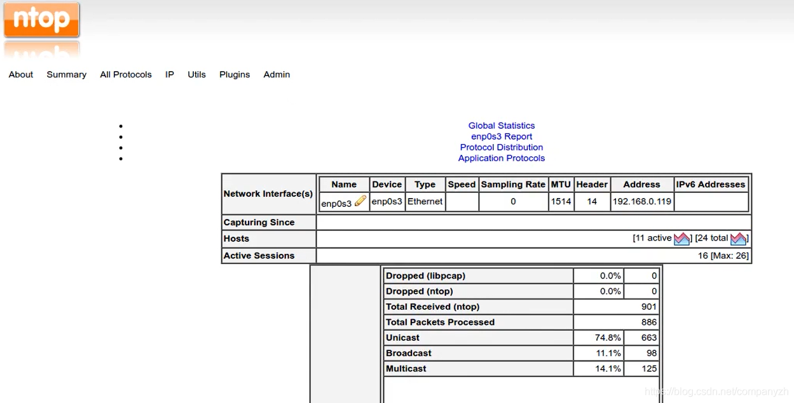
我们应该做的第一件事是单击“管理员”,“配置”和“启动首选项”来使用用户名以及安装过程中创建的密码登录
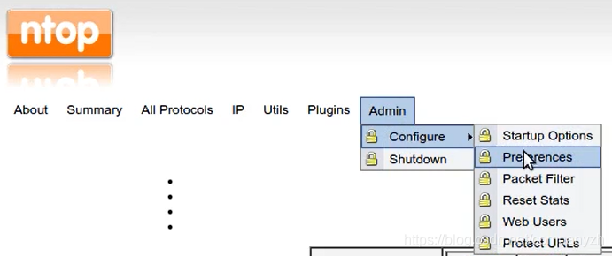
摘要菜单提供了受监控流量的概述。
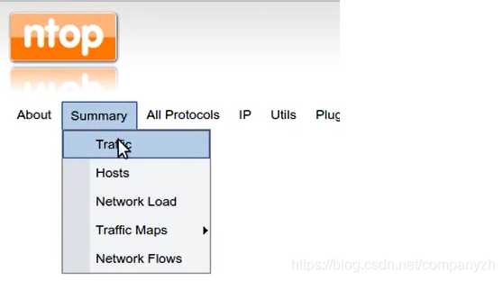
按接口和协议等不同指标进行排列。主机将显示连接的主机及其网络配置文件。
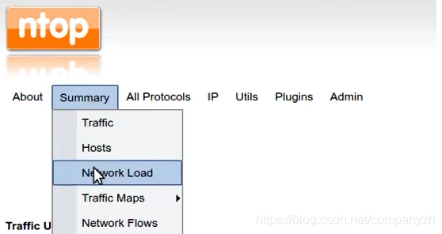
网络负载为你显示了图形化的统计信息，说明了历史时间段内经历的负载水平。此功能对于快速发现突然的和无法解释的活动峰值特别有用。所有协议和流量都以数字形式表示主机的网络流量，网络吞吐量为我们提供负载率。
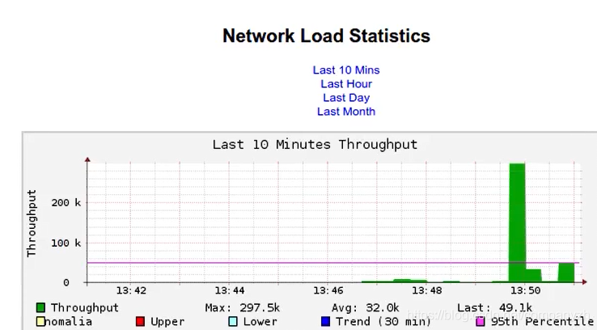
你可以激活或停用sflow插件，从而使ntop可以管理sflow格式的数据，该数据可以由Wireshark等其他软件使用。
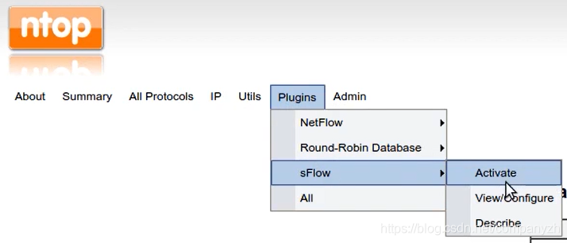
其他页面允许你类似地深入数据，以更好地理解和可视化网络上实际发生的事情。你应该花一些时间来了解所有选项。我就不一一的介绍了。只有当你实际花费时间定期查看输出时，ntop统计信息才有用。一种可行的方法是养成使ntop在浏览器的选项卡中运行，然后单击以偶尔查看一下的习惯。你应该一眼就能发现奇怪的信息。另一种方法是在办公室某处繁忙的地方的墙上悬挂一个屏幕，这样来来回回的人就都能看到。
cacti - Network Graphing
ntop非常擅长处理实时数据，但是，如果你正在寻找网络历史状态的深入，图形化的详细视图，那么cacti可能是值得一看究竟的东西。与ntop一样，cacti被构建为RRDtool日志记录服务。
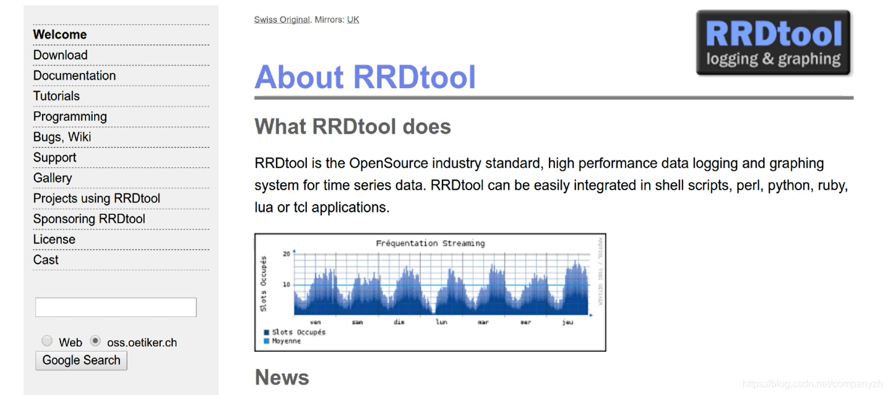
实际上，你甚至可以通过可用的插件将ntop数据添加到cacti的显示器中。由于cacti提供了特别丰富的功能，包括各种自定义选项，因此完全配置它以满足你的特定需求可能很复杂。选择cacti意味着你的未来将有一个学习曲线（Learning Curve）。我将帮助你克服这种困难的想法，并建立一个简单的基于存储库的实例。
首先，还是需要先安装。
sudo apt intall cacti
复制
在安装过程中，系统将提示我输入MySQL密码，并选择一个Web服务器。我将使用Apache。
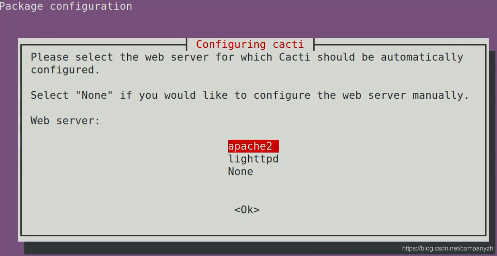
还会询问我是否要使用通用数据库来为Cacti配置数据库。我选择的是Yes。
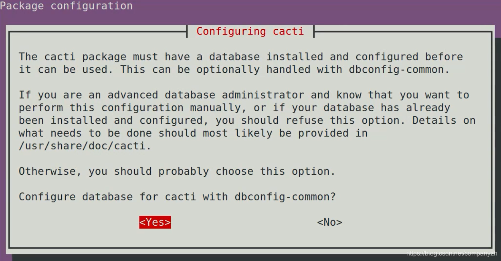
基本配置详细信息（例如密码和数据库信息）可以在etc/cacti/debian.php中找到。 如果你需要进行任何更改，或者只是想提醒自己原来的选择，这里可以是你要找的地方。但是，所有真正的cacti乐趣都发生在你的浏览器中。首先，将浏览器指向Cacti服务器的主机名或IP地址，然后添加/ cacti。首次访问此地址时，单击``新建安装''，将显示Cacti认为你需要的默认配置值，并确认所有必需资源都可访问。
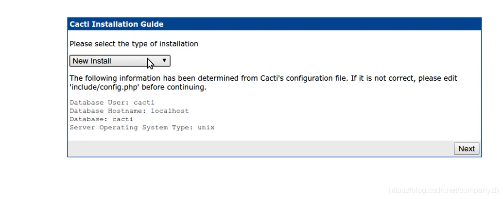
准备好实际开始工作后，将提示你输入Cacti用户名和密码。
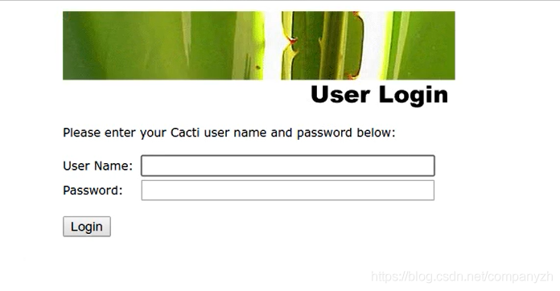
当然，你尚未选择用户名和密码。但是我可以告诉默默的告诉你，默认的用户名和密码均为admin（一般人我告诉他/她）。第一次登录后，你会被强制要求更新密码。登录后，你会发现cacti界面主要分为两个选项卡。控制台是你管理设备和配置的地方，图形是你查看Cacti网络分析的图形化输出的位置。
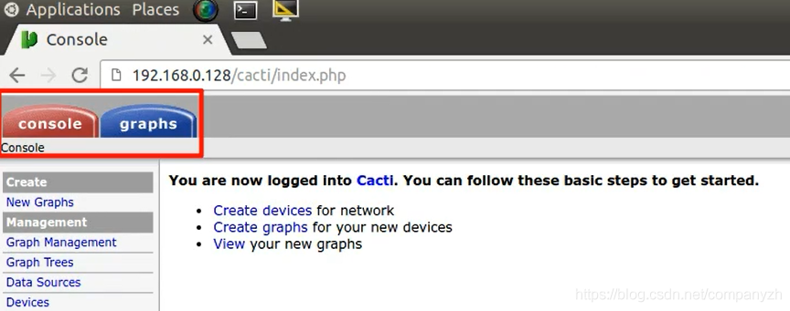
我们可以单击左侧面板上的“设备”，即可查看在安装过程中创建的本地主机设备。除了管理基本的设备状态和ID详细信息以及连接设置（如Downed Device Detection协议选择）外，我将单击Localhost链接以了解我们可以在这里可以控制的各种事情。

你还可以在左边的控制栏上点击和查看控制数据源，图形和查看系统日志。回到图形窗口，我们可以按任何历史时间段过滤图形内容，从而使可视化网络所经历的现实活动变得更加简单。并且通过添加插件（例如ntop插件），还可以大大增加可跟踪的数据范围。
感兴趣的你可以自己安装来玩耍一下。
Snort 入侵防护
与基于明确规则允许或拒绝流量的防火墙不同，基于网络的入侵检测系统（如Snort）将评估数据包并在出现可疑的时候向管理员发出警报，Snort实际上可以在三种模式下运行。
- 嗅探器，它只读取看到的所有数据包，然后将它们打印在屏幕上。
- 设置为“日志”时，它将把数据包转移到预设的日志目录。在完全网络入侵检测模式下，它会根据规则集分析流量内容，然后在发现匹配项时提醒管理员。
- 在IDS模式下，Snort可以很好地发现恶意缓冲区溢出或隐匿端口扫描的早期症状。为了确保您保持最新状态，
要想获取Snort的最新版本，你需要自己去构建。这需要大量的文件系统管理经验。尽管Snort站点具有出色的文档。当然因为我们只是讲解，并不会用在production上，我将使用简便的方式安装
sudo apt install snort
复制
同样的，你需要在安装之前确认接口信息，因为系统会提示你选择Snort将在其所使用的子网范围内使用的主接口。
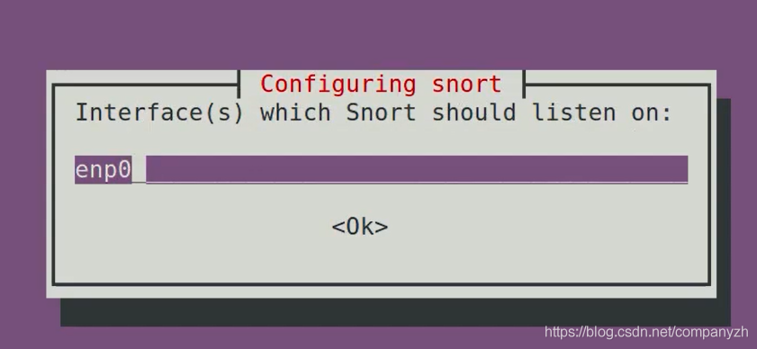
此配置信息将保存在etc/snort/snort.conf。你应该在snort中寻找ipvar HOMENET。HOMENET值必须至少包含Snort将监听的子网。
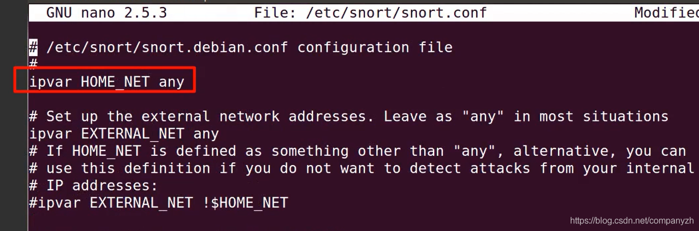
使用any可以，但是你最好将活动限制为仅一个特定网络。
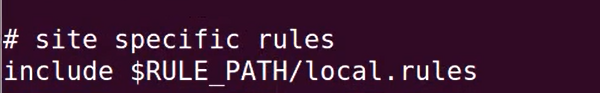
上图中的rule也很重要，因为你可以使用包含，添加你自己的规则，测试Snort警报的规则。完成后，我们应该测试配置文件，以确保没有错误。您可以验证Snort。使用-T进行测试，使用-i选择接口测试，然后使用-c 告诉Snort配置是哪个，这是我们目前正在测试的配置。
snort -T -i enp0s3 -c /etc/snort/snort.conf
复制
希望你会在输出的末尾看到成功消息，如下所示。
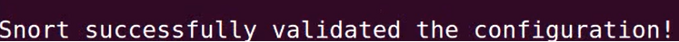
现在让我们来启动它。我们将告诉Snort使用-A console参数将其输出打印到屏幕上。 -q表示安静运行，而没有常规状态报告。 u指定一个用户，在这种情况下为Snort。 g指定它的组，再次是Snort。 c指向我们的conf配置文件。-i告诉Snort使用哪个网络接口。
snort -A console -q -u snort -g snort -c /etc/snort/snort.conf -i enp0s3
复制
你可以打开另一个terminal来进行ping操作，你会发现有很多的流量在流动。我们在屏幕上看到的所有内容也都保存到/ var/log/snort目录中的单个文件中。当然，所有这些都会产生大量的数据，而这些数据将很快变得几乎无法读取。解决该问题的一种方法是安装Barnyard2将进入的数据假脱机到MySQL数据库中，然后可以使用最合适的方式查看和解释该数据库。这超出了本课程的范围，我就不细讲了。